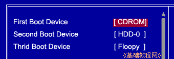
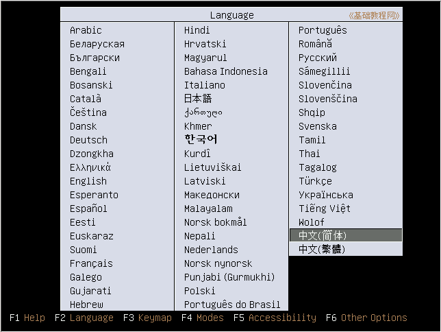
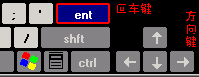
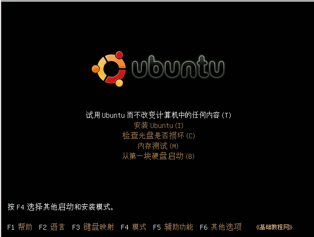
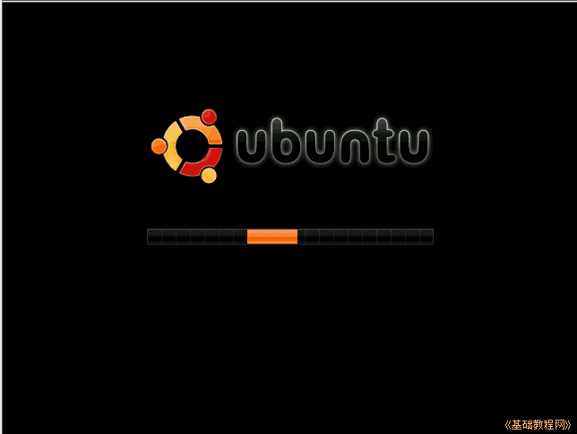
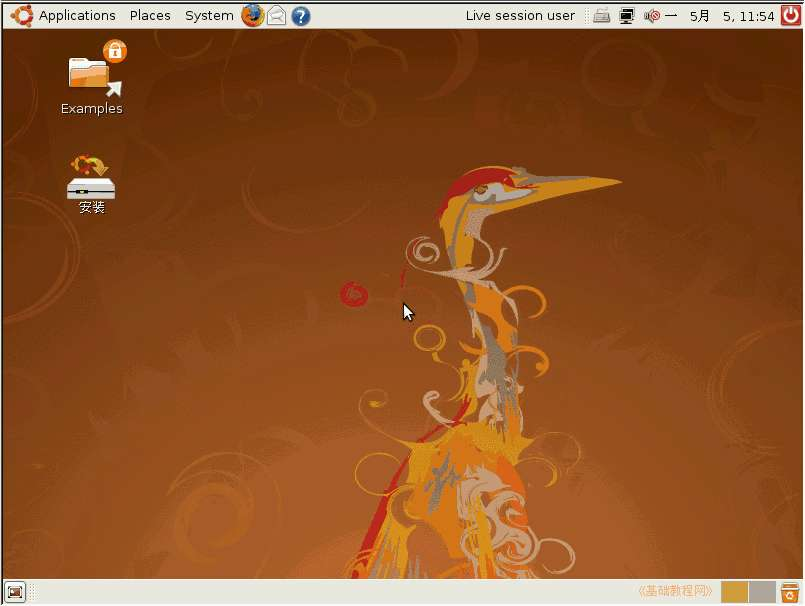
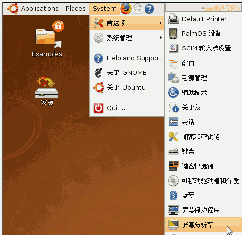
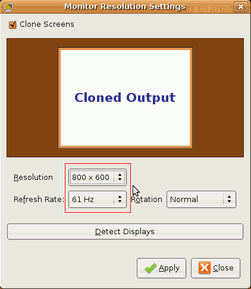
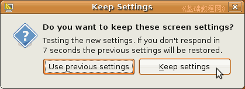

Ubuntu安装基础教程
作者：Teliute 来源：基础教程网
五、光盘安装 返回目录 下一课如果我们刻录了Ubuntu的安装光盘，那么可以用光盘来进行安装，首先用光盘来启动计算机，下面我们来看一个练 习；
1、光盘启动
1）在CMOS中设置好了光盘启动，然后放入Ubuntu安装光盘，重启动计算机；

2）稍等一会儿，等光盘开始读盘后，屏幕上会出来一排菜单，按向右方向键选择“中文(简体)”，然后按一下回车键；

方向键，就是键盘中间的下边有几个箭头的按键，回车键在它们左边标有Enter；

3）然后屏幕显示的就是中文了，第一个是试用的Live CD，系统将全部加载到内存里，直接按回车键进入第一项；

4）然后出来一个滚动条，不停地来回晃动，这是在读取各个系统文件，然后开始一步步加载；

5）然后等待一会儿，就会出来一个黄色背景图桌面，左上方有两个图标，上边和下边各有一个面板条；

6）这个就是live CD 桌面，里面可以进行许多Ubuntu操作，如果屏幕的分辨率太高闪得厉害，可以把分辨率先调整一下；
2、调整分辨率(可选)
1）在上边的面板条左边，找到“System”系统菜单，点“System－首选项－屏幕分辨率”菜单，出来一个面板；

2）在出来的面板中间设定屏幕大小，注意：这儿的图片是虚拟机里的，应根据自己的机子进行设定，拿不准可以看一下显示器的说明书，或者不修改它；

3）然后点下面绿色的“Apply”应用按钮，屏幕会闪一下，然后出来一个对话框，询问是否保留；

4）如果设置正确，就点右边的“Keep settings”，保留设置，然后点右下角的“Close”关闭按钮，完成屏幕设置；
本节学习了光盘进入Ubuntu桌面Live CD系统，以及调整分辨率的基本方法，如果你成功地完成了练习，请继续学习下一课内容；本教程由86团学校TeliuTe制作|著作权所有，商业用途请与作者联系
基础教程网：http://teliute.org/
美丽的校园……
转载和引用本站内容，请保留版权信息和本站链接。